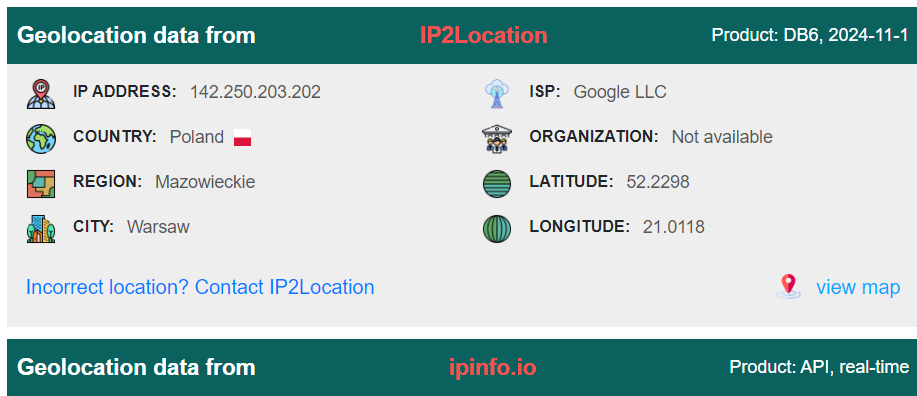
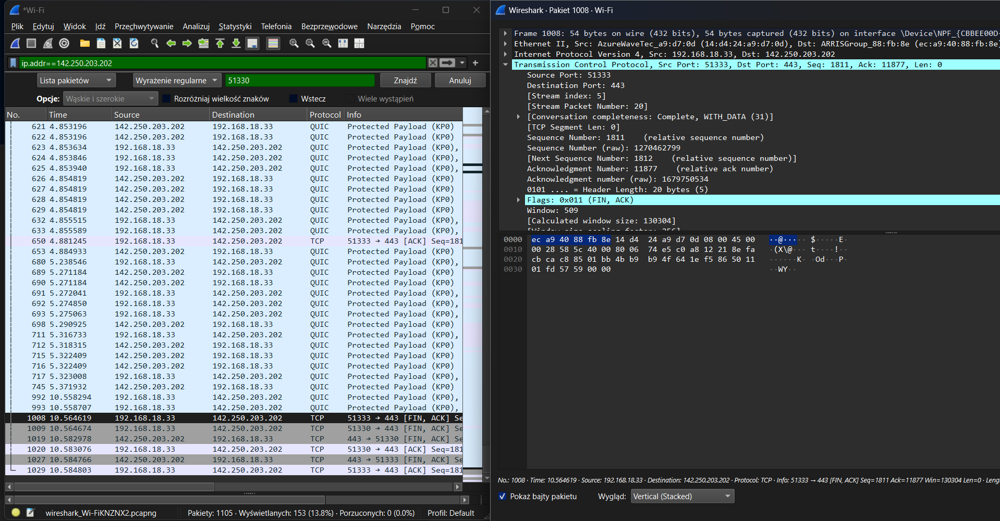
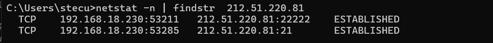
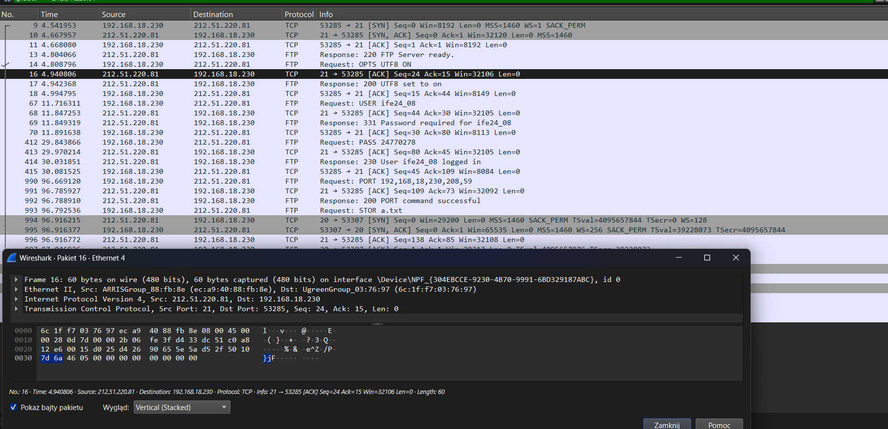
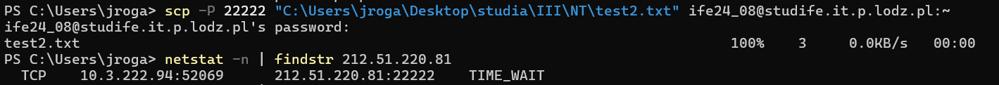
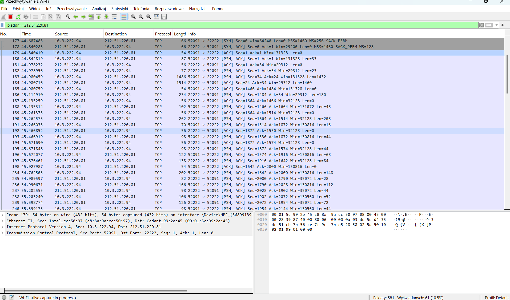
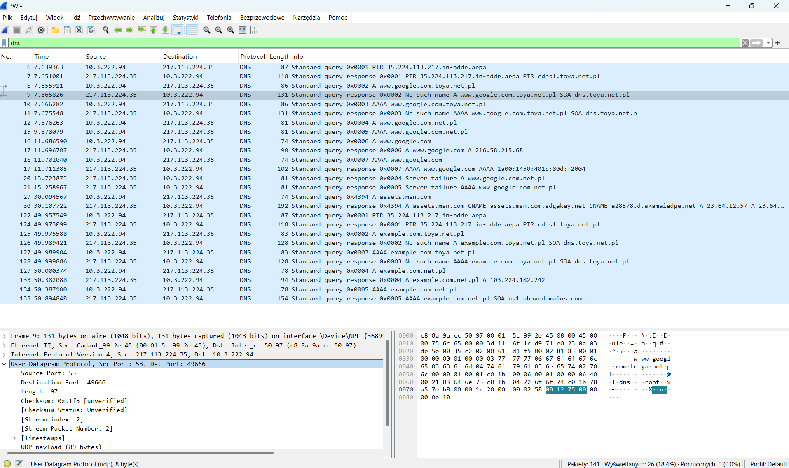

Theoretical part
1.1. Describe the following: TCP protocol, UDP protocol, TCP protocol parameters, UDP protocol parameters, TCP connection, three way handshake, connection establishment, connection release, ports,
-
TCP protocol
TCP (transmission control protocol) is a communication protocol responsible
for ensuring reliable data exchange between the sender and
reciver before transmitting data. Reliable means:
-
Data is transmitted in correct order (although segments can arrive at diffrent time,
they are assemled)
and integrity is verified.
-
Error control: TCP checksums data corruption during transmission
-
TCP ensures flow control. It blocks the situations when
the reciver gets more data than it can proceed.
-
Acknowlegment mechanism: the reciver confirms recipt of data. In case
of lack of acknowlegment - there occurs retransmission
-
UDP protocol
UDP (user datagram protocol) is quicker and simpler version of TCP, but
it doesn't guarantee reliability. It's conectionless, so the data is sent
without estabilishing connection before. Key features of UDP are:
-
Speed: lack of acknowledgment and retransmission mechanisms make it
more efficient for real time applications
-
No guarantee of data delivery: data may be lost, duplicated or arrive
out of order
-
Simplicity: UDP has less complex structure than TCP making it more suitable
for scenarias where speed is more important than reliability (e.g streaming)
-
No flow control: the sender does not monitor the reciver's capacity to process data.
-
TCP parameters
- Source Port Address: A 16-bit field that holds the port address of the application that is sending the data segment.
- Destination Port Address: A 16-bit field that holds the port address of the application in the host that is receiving the data segment.
- Sequence Number: A 32-bit field that holds the sequence number, i.e., the byte number of the first byte that is sent in that particular segment. It is used to reassemble the message at the receiving end of the segments that are received out of order.
- Acknowledgement Number: A 32-bit field that holds the acknowledgement number, i.e., the byte number that the receiver expects to receive next. It is an acknowledgement for the previous bytes being received successfully.
- Header Length (HLEN): This is a 4-bit field that indicates the length of the TCP header by a number of 4-byte words in the header. For example:
- If the header is 20 bytes (minimum length of TCP header), then this field will hold 5 (because 5 x 4 = 20).
- For the maximum length of 60 bytes, it will hold the value 15 (because 15 x 4 = 60).
Hence, the value of this field is always between 5 and 15.
- Control Flags: These are 6 1-bit control bits that control connection establishment, connection termination, connection abortion, flow control, mode of transfer, etc. Their functions are:
- URG: Urgent pointer is valid.
- ACK: Acknowledgement number is valid (used in case of cumulative acknowledgement).
- PSH: Request for push.
- RST: Reset the connection.
- SYN: Synchronize sequence numbers.
- FIN: Terminate the connection.
- Window Size: This field tells the window size of the sending TCP in bytes.
- Checksum: This field holds the checksum for error control. It is mandatory in TCP as opposed to UDP.
- Urgent Pointer: This field (valid only if the URG control flag is set) is used to point to data that is urgently required and needs to reach the receiving process at the earliest. The value of this field is added to the sequence number to get the byte number of the last urgent byte.
-
UDP parameters
- Source and Destination Ports: Identify the application sending and receiving data (e.g., port 53 for DNS).
- Length: Specifies the total size of the UDP datagram, including the header and data.
- Checksum: Verifies the integrity of the header and data. It is optional in IPv4 but mandatory in IPv6.
-
TCP connection
- connection-oriented communication protocol used for reliable data transmission between two devices on a network
- ensures that data is delivered in correct order, without errors, with mechanism for retransmitting list packets
- operates at the transport layer of the OSI model
- provides services like error checking, flow control and congestion control
- established using a process known as three-way handshake and terminated through a connection release process
- during its lifetime, data can be transmitted in both directions (full-duplex), each data segment is acknowledged by the receiver
-
Three-way Handshake
- process used to establish a TCP connection between a client and a server
- ensures both sides are ready to send and receive data
- involves three steps:
- SYN (synchronize) - the client sends a SYN packet to the server to initiate the connection, indicating that it want to start a communication
- SYN-ACK (synchronize-acknowledge) - the server responds with a SYN-ACK packet, acknowledging the SYN request and indicating that it is ready to establish the connection
- ACK (acknowledge) - the client sends an ACK packet back to the server to acknowledge the server's response. The connection is established and data transmission can begin
-
Connection Establishment
- refers to the process in which a TCP connection is initiated (typically through the three-way handshake)
- ensures that both ends of the communication are ready to exchange data and that parameters (such as sequence numbers and window sizes) are agreed upon for the session
- Sender starts the process with an initial sequence number, SYN flg, maximum segment size and window size
- Receiver a packet with its own initial sequence number, SYN and ACK flags, maximum segment size (both parties agree on minimum MSS to avoid fragmentation of packets), window size and acknowledgement number.
- Sender confirm by sending an ACK packet acknowledging the receiver's SYN-ACK (sequence and acknowledgement number, ACK flag) and finalizing the connection
-
Connection release
- process which involves gracefully closing the TCP connection when communication is finished
- ensures any remaining data is transmitted and resources are properly released
- termination follows four-step process:
- The side that wants to terminate connnection sends a FIN (finish) packet to the other side
- The receiving side acknowledges the FIN packet with an ACK
- The receiving side then sends its own FIN packet to the initiator of the termination process (indicating that it's done sending data)
- The initiator acknowledges the FIN with an ACK. The connection is fully closed and both sides can release resources
-
Ports
- in TCP and UDP ports are used to identify specific applications or services running on a device
- each device on the internet or local network has a unique IP address but different services on that device are distinguished by port numbers
- ports enable multiple services to run simultaneously on the same device allowing them to share the same network connection
- port numbers range from 0 to 65535, they are divided into 3 categories:
- well-known ports (0-1023) - used by common protocols like HTTP (port 80), FTP (port 21) and HTTPS (port 443)
- registered ports (1024-49151) - used by applications and services that aren't as commonly recognized as thos in the well-known range
- dynamic/private ports (49152-65535) - typically used by client application for ephemeral or temporary connections
- ports work alongside IP addresses to route traffic to the correct application on a device
Practical part
2.1.1. Enter www.google.com webpage using preferred browser. Use netstat and Wireshark to identify ports which are used for data transmission (local and remote port numbers). Finish the connection (close the browser) and check local port status.
Instuction:
- Open wireshark, set filter as ip={google ip}
- Open google com
- In terminal netstat -n
- Terminate connection to google.com
- In netstat find ESTABILISHED connection with google.com and TIME WAIT connection with google.com on same ports



2.1.2. Copy the file from your local host to studife.it.p.lodz.pl server using ftp protocol. Use netstat and Wireshark to identify ports which are used for data transmission (local and remote port numbers). Finish the connection and check local port status.
Connect to server using ftp studife.it.p.lodz.pl then login. Chceck netstat -n | findstr 212.51.220.81.
In wireshark set filter ip.addr==212.51.220.81. Put file on the server and check netstat -n | findstr 212.51.220.81.
Check the records from wireshark.


2.1.3. Copy the file from your local host to studife.it.p.lodz.pl server using scp or sftp protocol. Use netstat and Wireshark to identify ports which are used for data transmission (local and remote port numbers). Finish the connection and check local port status.
We set the wireshark filter to ip.addr==212.51.220.81. Then we use scp to put the file on the server and check netstat -n | findstr 212.51.220.81.


2.1.4. Use Wireshark to check which protocol and port is used in transport layer by DNS protocol.
We set the filetr in wireshark to dns and capture the traffic.
